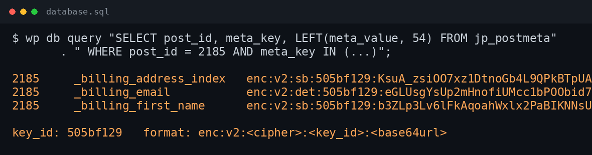
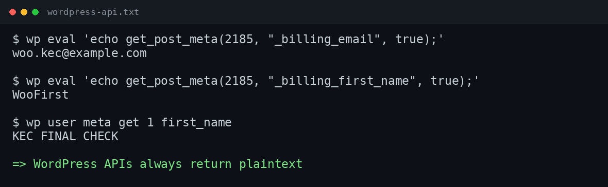
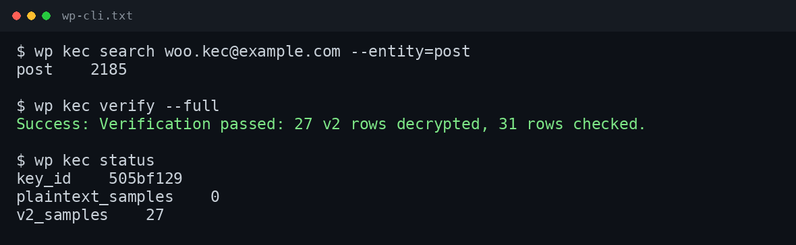

Field-level encryption.
DB chỉ thấy ciphertext.
Bảo vệ PII khách hàng ngay trong database mà không phải viết lại site. Khai báo field cần mã hoá, giữ nguyên API WordPress, tìm kiếm qua blind index, xoay key an toàn. Ảnh bên dưới là dữ liệu thực tế từ database của bản test.
Backup rò rỉ nhiều hơn bạn nghĩ.
HTTPS chỉ bảo vệ trên đường truyền. DB dump, backup bị lộ hoặc SQL injection vẫn đọc được dữ liệu — trừ khi chính các field đó được mã hoá.
Email và đơn hàng nằm plaintext
Mọi DB dump, backup và bản export analytics đều chứa tên, email, số điện thoại khách hàng ở dạng đọc được.
Search và login bị gãy
Hash một chiều bảo vệ giá trị nhưng bạn vẫn cần tìm chính xác/một phần và get_user_by() hoạt động.
Rotation và migration rủi ro
Tự xử lý key khiến rotation, migration và rollback rất dễ sai.
Bạn nhận được gì
Kết quả cụ thể, không chỉ là một thư viện crypto.
PII không đọc được trong DB dump
Field khai báo lưu dưới dạng enc:v2:…; key nằm trong wp-config hoặc file ngoài database.
API WordPress vẫn chạy
get_post_meta(), get_user_meta(), WooCommerce và ACF vẫn trả plaintext cho ứng dụng.
Blind-index search và login
Tìm chính xác/một phần, get_user_by(), email_exists() và login token hoạt động bình thường.
Migrate và rotate an toàn
Scan, dry-run, migrate, verify --full, rollback, reindex và rotation 2 pha qua WP-CLI.
WooCommerce, form, đa ngôn ngữ
Order meta/address index, CF7+Flamingo, ACF, Polylang và multisite đã test trong lab.
GPL-2.0, không lock-in
Source, changelog và release trên GitHub. Không patch core; key thuộc về bạn.
Bằng chứng thực tế từ database
Dữ liệu test tổng hợp, không chứa PII thật. Key ID được hiển thị, key thì không.

enc:v2:….
get_post_meta() và get_user_meta() trả plaintext bình thường.
verify --full trên server test.Thiết kế
Default-deny: chỉ field được khai báo mới bị mã hoá. Không patch core, không patch plugin khác.
Registry-driven
Khai báo entity/meta/column trong wp-config.php, file config, filter hoặc admin UI.
AES-256-GCM
Randomized cho text; SIV deterministic cho email/login để so sánh bằng mà không lộ plaintext.
Blind index
HMAC-SHA256 full token + trigram, tìm chính xác và tìm một phần mà DB không lưu plaintext.
User token mode
user_login/user_email lưu token 55 ký tự; plaintext reversible trong encrypted meta.
WooCommerce
Order meta, address index, customer lookup, order search; HPOS phải tắt ở v1.
Vận hành
Scan, migrate, verify --full, reindex, rollback, safety dump tự động, rotate key 2 pha, WP-CLI.
Cho dữ liệu WordPress thật.
Agency, chủ shop và site membership cần bảo vệ PII mà không mất search, login hay trải nghiệm admin quen thuộc.
WooCommerce store
Mã hoá billing/shipping và address index; order search và customer lookup vẫn chạy.
Membership & user site
Tokenize login/email; authentication, password reset và quản lý user bằng WP-CLI vẫn hoạt động.
Form, ACF và CRM meta
Mã hoá field form/ACF đã khai báo, search email qua blind index; Flamingo vẫn dùng được.
Migration legacy
Đọc ciphertext legacy, migrate sang v2, verify từng row và rotate key 2 pha.
Cài đặt
Yêu cầu PHP 8.0+, WordPress 6.4+, OpenSSL. Sao lưu DB trước khi migrate dữ liệu cũ.
Cài plugin, khai báo KEC_KEY + KEC_TOKEN_SECRET.
Chỉ khai báo field cần bảo vệ trong KEC_FIELDS (default deny).
Chạy scan → migrate → verify --full; reindex search.
git clone https://github.com/thiennhant95/wp-encrypted-fields.git
cp -r wp-encrypted-fields wp-content/plugins/
wp plugin activate wp-encrypted-fields
# wp-config.php (trước require wp-settings.php)
define('KEC_KEY', 'base64:REPLACE_WITH_32_BYTE_KEY');
define('KEC_TOKEN_SECRET', 'base64:REPLACE_WITH_STABLE_SECRET');
define('KEC_FIELDS', [
'user' => [
'columns' => [
'user_login' => ['type' => 'login', 'max_length' => 60, 'search' => true],
'user_email' => ['type' => 'email', 'max_length' => 100, 'search' => true],
],
'meta' => ['first_name' => ['type' => 'text', 'search' => true]],
],
'post' => [
'post_types' => ['shop_order'],
'meta' => [
'_billing_email' => ['type' => 'email', 'search' => true],
'_billing_address_index' => ['type' => 'text', 'search' => true],
],
],
]);
wp kec scan
wp kec migrate --backup-confirmed
wp kec verify --fullKết quả kiểm chứng
Cùng một test lab: WordPress 7.1.4, PHP 8.1, MySQL 5.7, plugin 0.4.0.
| Hạng mục | Kết quả |
|---|---|
| Tương thích plugin | 100 plugin (WooCommerce, CF7/Flamingo, ACF, Yoast, Rank Math, Elementor, WPForms, Polylang, BuddyPress, bbPress, FluentCRM, membership/LMS/form/CRM/cache/security/backup…). 99 pass; encrypted-blog fail do plugin lỗi. |
| Multisite | 2 site: meta encryption + search index theo site; user columns dùng wp_users/wp_usermeta shared; user creation/role assignment đã fix ở 0.2.2. |
| Đa ngôn ngữ | Polylang en/vi: translated posts, encrypted meta, search, language filter — pass. |
| Vận hành | Backup/restore, safety dump tự động, rotate key 2 pha, verify --full, lock, backup-ack TTL — đã diễn tập trên server test. |
| Bảo mật dữ liệu | DB dump chứa ciphertext; key không nằm trong DB; email lookup/auth vẫn hoạt động qua token. |
post_content/post_title không được mã hoá;
custom table không có adapter (WP Mail Logging, MailPoet, FluentCRM…) vẫn plaintext;
HPOS chưa hỗ trợ ở v1.
Câu hỏi thường gặp
Có thay thế HTTPS/SSL không?
Không. HTTPS bảo vệ trên đường truyền. Encrypted Fields bảo vệ các field đã khai báo ở trạng thái at rest, nên DB dump hoặc backup bị lộ cũng không đọc được.
Order search của WooCommerce còn chạy không?
Có với field searchable đã khai báo: plugin loại encrypted column khỏi SQL search của WooCommerce và merge kết quả blind index. HPOS phải tắt ở v1.
get_user_by(), email_exists() và login còn hoạt động không?
Có. Cột login/email lưu blind-index token; query equality/IN được rewrite; hook authentication giải mã token về plaintext.
Mất key thì sao?
Dữ liệu đã mã hoá không thể phục hồi nếu mất key. Hãy backup wp-config/file key, để key ngoài DB và diễn tập rotation trước khi đổi.
Những gì chưa được mã hoá?
post_content/post_title, wp_options, và custom table chưa có adapter. Field meta đã khai báo nhưng còn plaintext sẽ bị wp kec verify --full báo cáo.
Có miễn phí không?
Có. GPL-2.0-or-later, source và release trên GitHub. Không có bản trả phí hay key escrow.
Sẵn sàng bảo vệ PII khách hàng?
Cài plugin, khai báo field cần bảo vệ và chạy verify --full trước khi go-live.